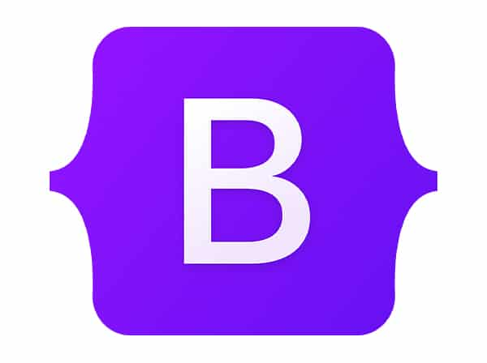
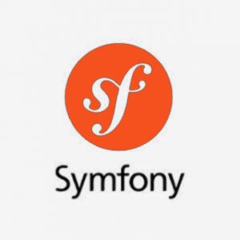
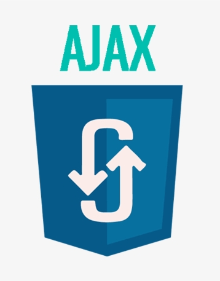
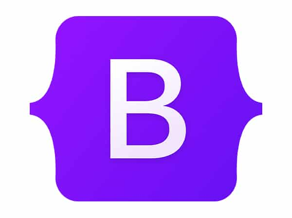
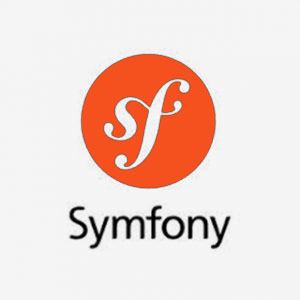
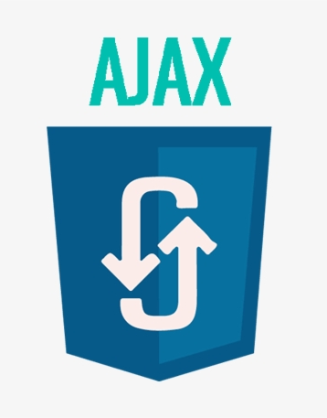

I’m a passionate and detail-driven web developer who enjoys building clean, responsive, and user-friendly websites. I approach every project with precision and a strong focus on structure, style, and usability.
I work confidently with HTML5, CSS3, JavaScript, PHP, SQL and Bootstrap to create modern interfaces, and I use GitHub to manage code efficiently and collaborate smoothly.
I had the opportunity to work at LePoleS, where I honed my skills and truly learned the craft of web development. This experience taught me the importance of best practices, teamwork, and delivering quality results on real projects. Beyond technical skills, I am highly organized, proactive, and eager to learn.
I believe that great development is not just about making things work — it’s about making them work well, look good, and be maintainable.
EXPERIENCE
LePoleS
(2025 - present)
I’m currently working as a junior web developer at LePoleS, where I take part in real web projects while continuing to expand my skills. The experience is helping me become a more confident and capable developer, both technically and professionally.
PROJECTS
World capitals quiz
I developed an interactive and engaging quiz on world capitals, designed to test and enhance users' geographical knowledge. This project showcases my skills in creating intuitive and responsive user interfaces, with a particular focus on user experience. The quiz features a series of multiple-choice questions, providing a final score for the users.
Link to..
To-do-list
I developed an intuitive and functional to-do list. This project allows users to easily add new items to a list via an input field and remove them with a simple click once completed. My focus was on creating a clean and responsive interface, ensuring a smooth and efficient user experience for organizing daily tasks. This showcases my skills in front-end development and data management logic.
Link to..
E-commerce Boxe
I developed an e-commerce platform dedicated to selling boxing equipment and apparel. This website was designed to offer a clear and engaging shopping experience for athletes and enthusiasts. The project highlights my skills in creating an intuitive, responsive, and visually appealing user interface.
Link to..
Jurassic World
This project highlights my ability to structure a site that not only visually captivates but also provides all essential information for planning a visit. The site includes sections dedicated to: an engaging presentation of the exhibition, detailed practical information (such as opening hours and exact location), and a price list. The goal was to create an intuitive and informative interface.
Link to..